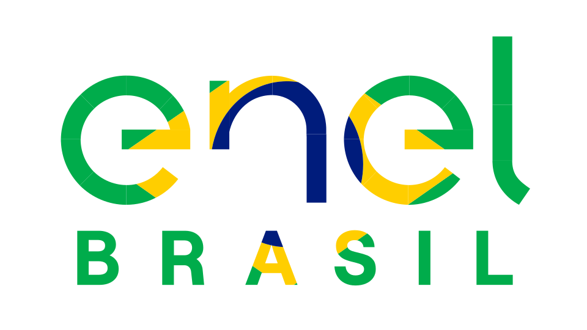
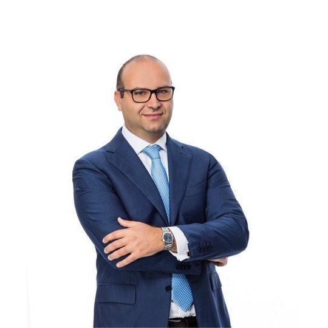
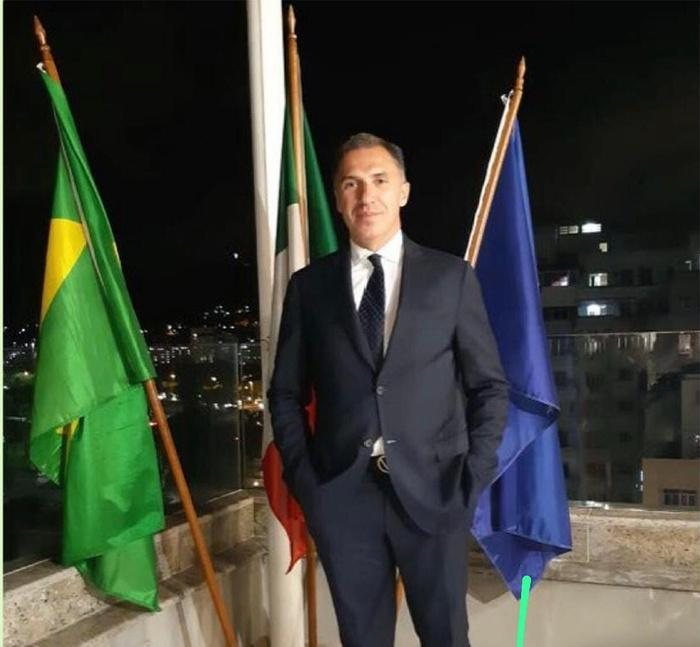

Um diagnóstico de marca, reputação e experiência digital: a energia que sai do sistema, atravessa a cidade e é julgada dentro de casa.

Grande operação de energia, em ciclo recorde de investimentos, mas sob forte atenção operacional, regulatória e reputacional.
de clientes nas distribuidoras.
principais mercados de distribuição.
de capacidade instalada em geração renovável no Brasil.
em investimentos previstos no país entre 2025 e 2027.
destinados à distribuição.
Anos mais importantes da trajetória da Enel, em relação à sua operação atual no Brasil.
Criação do Grupo Enel, na Itália.
Chegada da Endesa ao Brasil, controlada pela Enel.
Distribuidoras Ampla (RJ) e Coelce (CE) passam a operar sob a marca Enel.
Aquisição da Eletropaulo, ampliando a presença do grupo no país.
Mudança de marca e novo ciclo de investimentos, com prioridade para distribuição, modernização de redes e resiliência.
Por se tratar de uma rede multinacional, a Enel conta com diversos postos de liderança em diferentes âmbitos.

AS
FMSão Paulo
de clientes em 24 municípios.
Rio de Janeiro
de clientes em 66 municípios e cerca de 73% do território fluminense.
Ceará
de clientes e presença em todo o estado.
O atual contrato da Enel Distribuição Rio chega ao fim de seu ciclo em 9 de dezembro de 2026.
A ANEEL já recomendou sua continuidade por mais 30 anos, após avaliar critérios regulatórios de continuidade e sustentabilidade econômico-financeira. A decisão final, porém, ainda depende do Ministério de Minas e Energia.
Previstos para o Rio entre 2025 e 2027
O valor representa crescimento de +74% sobre o plano anterior.
A ANEEL é a Agência Nacional de Energia Elétrica, órgão responsável por regular, fiscalizar e assegurar o cumprimento das regras pelas empresas do setor elétrico no Brasil.
Resiliência: eventos climáticos, vegetação, grandes extensões territoriais e características geográficas aumentam a complexidade da rede.
Energia consumida que não é corretamente medida ou faturada.
Ex.: fraude, furto, ligação irregular, falha de medição.
Dificuldade ou impedimento para acessar uma área e executar serviços.
Ex.: pode incluir restrições geográficas ou de segurança que dificultam a atuação das equipes.
Reclamações
reclamações / 10 mil UCs
Entre maio de 2025 e abril de 2026, a Enel Rio apareceu na primeira posição do ranking de reclamações citado pela imprensa a partir de dados da Aneel.
Julho de 2026
clientes afetados
O vendaval de 29 de julho provocou interrupções importantes no sistema elétrico fluminense.
Previstos para o Rio entre 2025 e 2027
Crescimento de +74% sobre o plano anterior.
Situação atual: Enel SP × ANEEL. A sucessão de grandes interrupções desde 2023 ampliou a discussão sobre quatro eixos críticos:
capacidade da rede elétrica de aguentar eventos adversos e voltar a funcionar rapidamente.
planejamento para situações de emergência.
acompanhamento feito pela ANEEL.
autorização para prestar o serviço.
Etapa final na ANEEL · 24 de agosto de 2026
A ANEEL negou o pedido de perícia apresentado pela Enel SP e encerrou a fase de instrução do processo. A companhia tem 10 dias para apresentar suas alegações finais. Próxima etapa: a Diretoria da ANEEL deverá deliberar sobre eventual recomendação de caducidade (extinção do direito de operar).
O que a Enel defende: necessidade de perícia independente; questionamentos sobre aspectos técnicos e processuais; argumento de que o caso envolve fatores meteorológicos, operacionais, estatísticos e regulatórios.
O processo está em etapa final na ANEEL, mas ainda não houve decisão pela perda de concessão.
| Tema | São Paulo | Rio de Janeiro |
|---|---|---|
| Situação regulatória | Processo de avaliação para recomendação de caducidade em curso. | Prorrogação da concessão recomendada pela ANEEL; processo ainda em andamento. |
| Continuidade do serviço | Qualidade do fornecimento e tempo de restabelecimento estão entre os principais pontos de acompanhamento regulatório. | Qualidade e continuidade do fornecimento também integram o acompanhamento regulatório. |
| Segurança territorial | Não aparece como questão central no processo regulatório atual. | Presença de áreas com severa restrição operativa dificulta o acesso e a atuação das equipes. |
| Perdas não técnicas | Não são o principal eixo do processo regulatório atual. | Representam um desafio relevante da concessão, associado inclusive às áreas de restrição operativa. |
| Investimentos previstos 2025 a 2027 | R$ 10,4 bilhões | R$ 6,1 bilhões |
Cobertura desfavorável com contrapesos: a empresa comunica transformação; a imprensa continua cobrando serviço.
G1 · 2 dias atrás
Aneel rejeita perícia pedida pela Enel e dá 10 dias para empresa apresentar defesa final
Folha de S.Paulo · 1 dia atrás
Sindicatos cobram solução para riscos trabalhistas com fim de concessão da Enel em SP
Band · 2 dias atrás
Aneel nega pedido da Enel SP e encerra instrução sobre caducidade
R7 · há 4 horas
Enel Rio investe em infraestrutura e reduz tempo de atendimento no estado
O Globo · 1 dia atrás
Enel Rio registra furto de 4 km de cabos elétricos no primeiro semestre de 2026
Band · há 23 horas
Enel registra furto de quatro quilômetros de cabos no Rio
Enel, mais perto de você.
enel.com.br
Notícias R7 > Rio de Janeiro
Enel Rio investe em infraestrutura e reduz tempo de atendimento no estado
Clique nos painéis para ampliar.
O que pauta a imprensa
SÃO PAULO
concessão · caducidade · apagões · Aneel · defesa da companhia · capacidade de resposta
RIO
interrupções · reclamações · reajuste tarifário · furto e perdas · renovação · eventos climáticos
O que a Enel procura pautar
investimentos · modernização · subestações · reforço de equipes · podas · digitalização · projetos sociais · sustentabilidade e cultura
Panorama digital · 30 dias.
resultados: menções encontradas.
engajamentos: soma das interações geradas pelos conteúdos, como curtidas, comentários e compartilhamentos.
alcance potencial: estimativa de exposição; não corresponde a pessoas efetivamente alcançadas.
sentimento: positivo · neutro · negativo.
Fonte: Talkwalker | Período analisado: 28/07 a 26/08/2026 | Brasil
resultados no dia · mil engajamentos
Cobertura representativa do pico | GloboNews: falta de energia após vendaval no Rio.
Falta de luz após vendaval provoca protestos no RJ
Fonte: Talkwalker | Período analisado: 28/07 a 26/08/2026 | Brasil
No momento de maior intensidade do pico, três dimensões estruturam a repercussão: serviço, resposta operacional e impacto territorial.
Serviço
energia · fornecimento · qualidade · interrupção
Resposta
restabelecimento · normalização · equipes · atendimento
Território
moradores · bairros · municípios · áreas afetadas
Fonte: Talkwalker | 31/07/2026, 11h às 12h | Intervalo de maior intensidade do pico.
As recuperações são episódicas; o saldo negativo é persistente no período.
Net sentiment over time*
mais menções negativas do que positivas
Entre as menções polarizadas, há forte assimetria negativa.
*Net Sentiment Over Time: evolução do saldo entre menções positivas e negativas. Fonte: Talkwalker | 28/07 a 26/08/2026 | Brasil
Críticas espontâneas se concentram em interrupção, demora e capacidade de resposta. Identidades preservadas.
São Paulo
"Aqui em São Paulo a Enel por muito menos deixou a gente 1 SEMANA sem energia. Sei que é difícil, mas vocês ainda estão no lucro."
"Agora que estão com a corda no pescoço começam a investir em melhorias. Pior companhia de energia de São Paulo."
"Isso é 2 vias de culpa: Enel que terceiriza todos os serviços e terceirizada que faz de tudo para baratear custos."
Rio de Janeiro
"@enelbrasil pior empresa de energia. Estamos sem luz a 28:00 horas."
Temas recorrentes
Há mais evidência de ações positivas realizadas pela empresa do que de elogios espontâneos à marca.
interrupções recorrentes · atendimento · infraestrutura · cobrança e percepção tarifária · demora na resolução
investimento em infraestrutura · novas subestações · eficiência energética · projetos sociais · melhoria anunciada de indicadores
As iniciativas favoráveis identificadas se concentram em seis frentes de atuação.
Troca de equipamentos e consumo consciente.
Formação profissional e programas educacionais.
Atendimento móvel, relacionamento territorial e regularização.
Patrocínios e projetos incentivados.
Renováveis, eletrificação e eficiência.
Contratações ligadas à expansão operacional.
A Enel mantém parceria de patrocínio com a Confederação Brasileira de Voleibol (CBV), que inclui os naming rights do Centro de Desenvolvimento do Voleibol, em Saquarema (RJ). Em agosto de 2026, o espaço sediou a homenagem aos 50 anos da geração masculina que disputou os Jogos Olímpicos de Montreal de 1976.
"Muito legal esse reconhecimento e justa homenagem a tantos atletas que nos deram tantas alegrias com este maravilhoso esporte. Voleibol na veia e no coração. Muito obrigada!"
Leitura
O esporte gera engajamento espontaneamente positivo e associa a marca a memória afetiva, um dos poucos territórios em que isso ocorre de forma natural.
Troca de geladeiras em Mauá combina benefício direto às famílias e redução do consumo de energia.
ABC Agora · Cidades · 10/08/2026
Mauá entrega 150 geladeiras novas e prevê nova edição em parceria com a Enel
O que a ação entrega
substituição gratuita de equipamentos antigos · modelos mais eficientes · potencial redução do consumo doméstico · benefício tangível e facilmente percebido
Fonte do case: ABC Agora | 10/08/2026
Projetos sociais, culturais, ambientais e de emprego ampliam os territórios positivos da marca.
Educação e capacitação
Escola de Eletricistas | Record/R7
Formação profissional gratuita; caso de aluno posteriormente contratado. Branded content oferecido pela Enel Brasil.
Comunidades
Energia Legal | Folha1
Regularização, atendimento móvel, consumo consciente e troca de equipamentos em Campos dos Goytacazes.
Sustentabilidade
Sala São Paulo | Folha de S.Paulo
R$ 4,5 milhões em modernização energética, climatização, iluminação e geração fotovoltaica.
Cultura
Enel Festival de Inverno Rio | Gshow
Patrocínio com presença da marca incorporada ao nome do evento em 2026.
Emprego
Expansão operacional | Extra
476 vagas abertas em todo o Estado do Rio.
Publicidade e posicionamento
"Compromisso tem marca.
Enel, mais perto de você."
Criada pela Leo, a comunicação coloca em primeiro plano investimentos, melhoria do serviço e aproximação com o consumidor.
Proximidade · Investimentos · Atendimento · Modernização · Presença territorial
Campanha institucional | JUL A SET 2025 | SP, RJ e CE
"Seguimos trabalhando 24 horas por dia, 7 dias por semana."
Gestão de crise
"Seguimos trabalhando 24 horas por dia, 7 dias por semana."
Campanha focada em gestão de crise, alegando que a empresa trabalha sem parar para restaurar a energia e conter os danos causados na rede elétrica.
A proximidade prometida precisa aparecer na experiência.
O que a marca promete
"Mais perto de você"
O que o cliente vivencia
A experiência concreta
Picos de interesse coincidem com momentos de maior exposição operacional e regulatória.
Fonte: Google Trends | 01/01 a 25/08/2026
A demanda digital é fortemente transacional: resolver serviço vem antes de navegar pela instituição.
01 · Resolver uma demanda
atendimento · WhatsApp · débitos · segunda via · pendências
02 · Entender controle e responsabilidade
propriedade · origem · relação com a Eletropaulo · natureza pública ou privada
Fonte: Answer the Public | 26/08/2026
Há barreiras que merecem atenção, especialmente para leitores de tela e usuários que precisam ampliar o conteúdo.
Enel Rio amplia em 40% os investimentos em distribuição em 2026
Mais da metade das imagens analisadas na home não apresentou descrição textual detectável para leitores de tela.
Botões, ícones e links sem identificação textual detectável podem dificultar o uso por tecnologias assistivas.
A página possui uma configuração que pode limitar a ampliação do conteúdo para pessoas com baixa visão.
O problema central não é falta de serviços; é a consistência da jornada quando o usuário precisa resolver.
visitas orgânicas estimadas para enel.com.br em agosto de 2026*
Principais termos estimados
| "enel" | ~277,5 mil |
| "enel segunda via" | ~181 mil |
| "enel rj" | ~39,2 mil |
| "enel telefone" | ~24 mil |
principais serviços fáceis de localizar:
segunda via
falta de energia
troca de titularidade
ligação nova
débito automático
canais de atendimento
Pontos positivos
diferencia tipos de ocorrência · orienta verificações de segurança · permite acompanhar estágios
Fricções
CAPTCHA: etapa adicional de validação.
Dados adicionais: aumentam o número de etapas até o registro da ocorrência.
*Fonte: Ahrefs, estimativa de tráfego orgânico, não equivalente a dados oficiais de acesso da Enel Rio.
Muitos canais, mas experiência fragmentada.
É a ausência de uma experiência suficientemente unificada, previsível e resiliente.
O cliente muitas vezes começa no site e termina em outro portal, aplicativo, WhatsApp ou formulário.
O que precisa ficar na cabeça de quem entra nesta conversa. Clique nos cards.
Interrupções, tempo de restabelecimento e capacidade de resposta seguem como principais testes reputacionais.
VoltarSão Paulo concentra maior pressão regulatória; o Rio combina concessão, serviço, perdas e complexidade territorial.
VoltarRestrições de acesso e perdas não técnicas exigem precisão e evitam generalizações sobre comunidades.
VoltarAções favoráveis existem, mas parte importante da exposição vem de canais institucionais e branded content.
VoltarA promessa de proximidade eleva a expectativa de resolução em atendimento e falta de energia.
VoltarHá muitos canais; a prioridade é torná-los integrados, previsíveis e resolutivos.
VoltarFontes públicas, ferramentas de monitoramento e veículos citados.
Enel Brasil / Enel Distribuição Rio
ANEEL
Talkwalker
Google Trends
AnswerThePublic
Record / R7
Folha1 · Gshow · Folha de S.Paulo
ABC Agora · Extra
Coberturas jornalísticas citadas no briefing